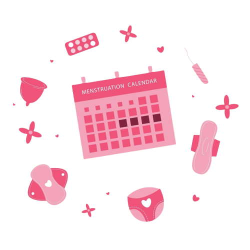

Deskripsi
Latar Belakang
Carmichael, M. A., Thomson, R. L., Moran, L. J., & Wycherley, T. P. (2021). The Impact of Menstrual Cycle Phase on Athletes' Performance: A Narrative Review. International journal of environmental research and public health, 18(4), 1667. https://doi.org/10.3390/ijerph18041667
Peranan Chatbot
Palanica, A., Flaschner, P., Thommandram, A., Li, M., & Fossat, Y. (2019). Physicians' Perceptions of Chatbots in Health Care: Cross-Sectional Web-Based Survey. Journal of medical Internet research, 21(4), e12887. https://doi.org/10.2196/12887
Services
Chatbot Interaktif
Bot percakapan yang mudah diakses kapan saja dimana saja melalui platform Telegram
Rekomendasi Klinik
Rekomendasi klinik atau Rumah sakit terdekat untuk penanganan keluhan kesehatan reproduksi wanita lebih cepat